Leila Rahmani
レイラ・ラフマーニ
「これは決して取り返しのつかない選択だ。だから教えてくれ。パラディン・レイラ・ラフマーニの指揮の下、アパラチアのブラザーフッド・オブ・スティールの成長と拡大を支持するか？それとも、我らがナイト・ダニエル・シンが忠誠を誓うエルダーの、恐ろしく時代遅れな指令に縛られるか？」
── 通信機を破壊する前のラフマーニ
パラディン・レイラ・ラフマーニ（Paladin Leila Rahmani）は、アパラチアのアトラス砦に拠点を置く第1遠征軍（First Expeditionary Force）のリーダーです。
彼女のチームは、エリザベス・タガーディのアパラチア・ブラザーフッドとの通信を再確立する任務のほか、アメリカの廃墟全体にあるテクノロジーの痕跡を調査し、東海岸でのブラザーフッドの存在を強化するために派遣されました。ラフマーニの部隊はロスト・ヒルズから来ています。アパラチアにおける彼女の支部は新しいため、彼女は他の派閥が協力してくれるよう、組織の善意を示すための複数の任務を割り当てます。
彼女は第1遠征軍の2人の主要なブラザーフッド・リーダーの1人であり、もう1人はアラン・コナーズの死後に副司令官を務めるナイト・ダニエル・シンです。彼女はブラザーフッドの方向性に関して、シンと頻繁に口論や意見の相違を起こします。
背景と歴史
戦前
戦前、ラフマーニは州兵（National Guard）として勤務し、恵まれない人々や自力で助からない人々を助けることを個人的な使命としていました。彼女は大戦争時にマリポサ軍事基地の近くに派遣されており、ブラザーフッド・オブ・スティールの結成を知るとともに、以前の軍歴のおかげで容易に組織に移行しました。ラフマーニはアラン・コナーズと親しい友人でした。彼らは共に爆弾を生き延び、互いにブラザーフッドに加わりました。彼女はエリザベス・タガーディが中尉だった頃から彼女を知っていました。
その間、彼女は思いやりがありながらも大胆なリーダーとしての特性を獲得し、決断力のある行動と独創的な戦術で名を馳せました。指導部からは批判されましたが、非常に成功した実績を上げ、下位階級のメンバーからも一般的に親しみやすい存在でした。アパラチア支部のブラザーフッドとの通信が途絶えた後、彼女は彼らと連絡を取るか見つけるために、他の4人のメンバーで構成される遠征隊の指揮をエルダー評議会から与えられました。
アパラチアへの遠征
2103年、パラディン・ラフマーニはアパラチアで長期任務を遂行するためにロスト・ヒルズのブラザーフッドから派遣されました。ロッキー山脈を越えた後に遠征軍との通信が途絶えたとき、ロスト・ヒルズの他の士官たちはラフマーニが脱走したのではないかと疑い始めました。ラフマーニを友人だと考えていたエルダー・ロジャー・マクソンは、その提案を受け入れることを拒否しました。これに対し、マクソンはラフマーニに個人的な嘆願を発し、任務に不安があってもプロトコルに従うよう懇願しました。ラフマーニは必ずしもマクソンと意見が一致したわけではありませんでしたが、二人は親しく、マクソンは彼女がまだブラザーフッドの価値観に忠実であると信じていました。
数ヶ月にわたる遠征の間に、ラフマーニと第1遠征軍の残りのメンバーは、物資を盗むレイダーの脅威にさらされている居住地に遭遇しました。ラフマーニは留まって戦うことを決断しましたが、シンは配布するのではなく武器を保護するというブラザーフッドのプロトコルに違反して、バンカーで見つけた官給品の武器（ヘルストームミサイルランチャー）を彼らに装備させることにしました。しかし、レイダー部隊が武器を盗むことができたため、武器はレイダー部隊に対して役に立ちませんでした。居住地は全滅し、アラン・コナーズはシンを救おうとして命を落としました。町の生存者はマルシア・レオーネとマキシモ・レオーネの2人だけでした。この事件はラフマーニとシンの間に分裂を引き起こし、シンは自分とラフマーニがエルダー評議会の裁判にかけられることを望みました。シンは自分の行動の結果に対して重い罪悪感を感じていましたが、ラフマーニは彼が最終的に助けようとしていたのだから自分自身を許す必要があると信じていました。マルシアは悲劇の原因をラフマーニとシンの両方の行動のせいにし、そもそも誰もレイダーに報復すべきではなかったと感じていました。ラフマーニ自身は、シンがコナーズの死について彼女を決して許さないと信じ始めました。
ラッセル・ドーシーがアトラス砦を要塞化している間、彼女の声が地域全体に聞こえ、週が経つごとに聞こえやすくなっていきました。
アトラス砦での定住
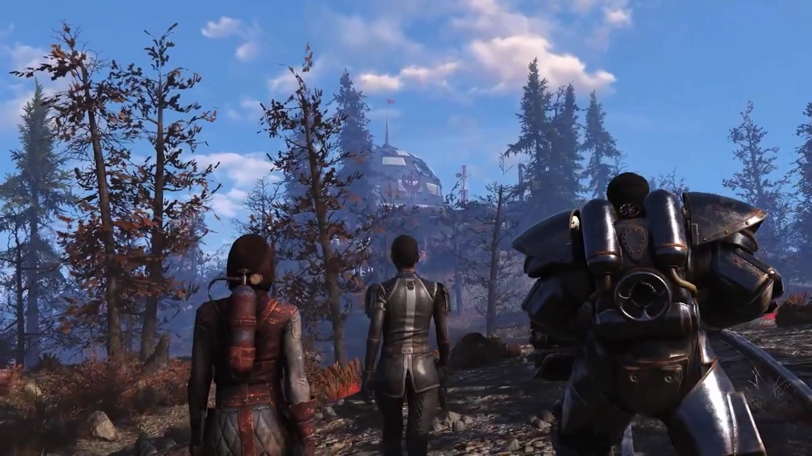
数ヶ月歩き続けてアトラス砦に到着すると、彼女と残された2人のメンバー、ナイト・シンとスクライブ・バルデスは、組織に正式に参加しようとする多くのイニシエイトやブラザーフッド志願者に遭遇し、勧誘しました。ドーシーも彼らの到着時にイニシエイトになりました。
到着後、ラフマーニ、バルデス、シンは命じられた通りロスト・ヒルズとの通信の再確立を始めました。彼らはまた、Vault 76の居住者たちが開発したスコーチに対する予防接種を受けました。しかし、アトラス砦の強化と地域での地位確立の過程で、シンとラフマーニは様々な問題で性格の不一致による衝突を繰り返しました。例えば、シンが自分とラフマーニがロスト・ヒルズに連れ戻されて裁判にかけられるべきだと信じているのと同じ事件で使用された、政府のロケットランチャーやその他の兵器の再出現などです。
ラフマーニは、イニシエイトとして訓練を受けていたVault 76の居住者に任務を割り当てました。彼女は、「ザ・リトリート」に住む入植者のグループが「ダガー」という名の残酷な女性によって嫌がらせと搾取を受けている状況の解決を支援するよう彼らに任務を与えました。彼女はまた、ファウンデーションに奪われた盗まれたミサイルランチャーを取り戻す任務を割り当て、それらを取り戻すための貿易取引の交渉を望みました。
バインドの鎖を断つ
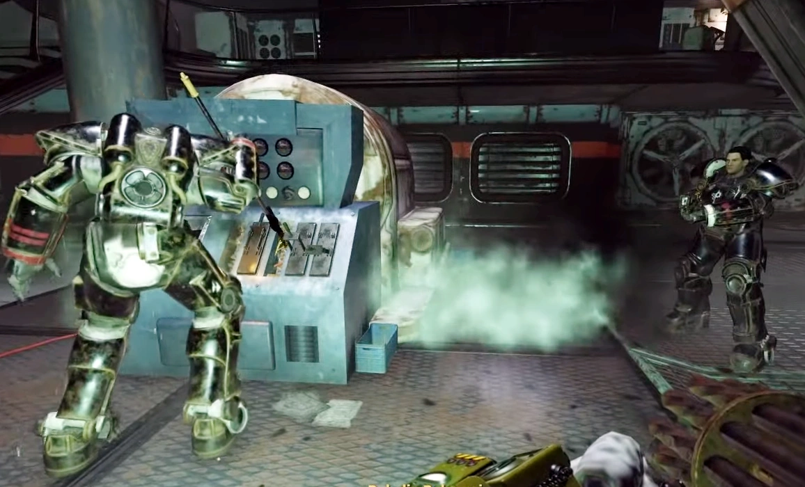
長距離送信機を使用してカリフォルニアのブラザーフッドとの通信を再確立する任務中、ラフマーニはVault居住者を自分の側に説得しようと試み、エルダーの支配から解放された、彼女が目指す慈悲深いブラザーフッドを作る手助けとして、彼女と一緒に送信機を破壊するよう求めます。彼女は、ブラザーフッド・オブ・スティールの本体との関係を断ち切り、独自のアパラチア支部を形成しようとしているという意図を明らかにします。Vault居住者が参加するかどうかにかかわらず、ラフマーニはそれを破壊し、もはや彼女をブラザーフッドの一部とは見なさないシンを激怒させます。しかし、彼らがさらに議論を続ける前に、アトラス砦でのスーパーミュータントの攻撃の知らせを受け取り、ラフマーニとシンの両方に一時的な団結の必要性が生じました。基地に戻ると、ラフマーニの行動はバルデスにも衝撃を与え、ラフマーニとシンの間にまた別の問題が生じたことに苛立ちます。スーパーミュータントの攻撃は対処されます。
スーパーミュータントの攻撃
それにもかかわらず、2104年になっても、ラフマーニとシンはブラザーフッドの主な使命をめぐって依然として対立しています。アパラチアの人々を守るか、大戦争のようなもう一つの終末を防ぐためにあらゆる戦前の技術を確保するかです。彼らはすぐに、アトラス砦へのスーパーミュータントの攻撃が偶然ではなかったことを発見します。以前ブラザーフッドの助けを求めてアトラス砦に来た人々の1人であり、シンによって追い返されたエドガー・ブラックバーン博士が、強制進化ウイルス（FEV）を改良する研究のテスト対象として使うために、アパラチア中から人々を誘拐していたのです。
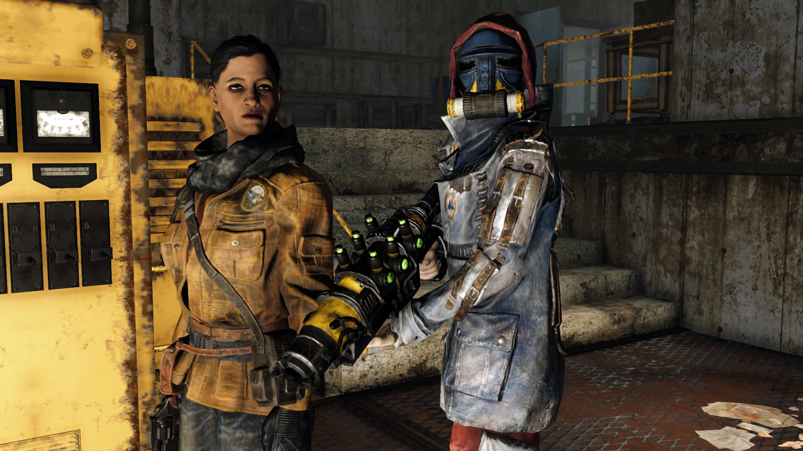
ラフマーニは、失踪事件についてブルーリッジ・キャラバン・カンパニーのボスであるジョアンナ・メイフィールドにインタビューすることに決めました。アリエスの案内の後、ラフマーニはブラックバーンがブルーリッジのいくつかのキャラバンに混ざっており、特にラッドストームのためハーパーズ・フェリーのトンネルに隠れていたキャラバンの中にいたことを知ります。Vault 96での作業中にブラックバーンが捕らえられた後、ラフマーニとシンは彼をウェストテック研究センターに連行します。そこでは、彼の仲間の科学者であるファルハ、ジェーン、ネリー・ライトが、水や空気に放出するためのFEVの最終調整を行っていました。これは、人々がウイルスにさらされるとスーパーミュータントに変わり、ハンターズビルよりもさらに最悪の事態につながるものでした。自分たちの研究がウェイストランドにおける人類の向上のためであることを証明しようと、ブラックバーンは自らウイルスにさらされることを志願しますが、プロセス中の計算ミスや誤作動によりブラックバーンは暴力的なスーパーミュータント・ベヒモスに変わり、ラフマーニとシンは彼を殺さざるを得なくなります。
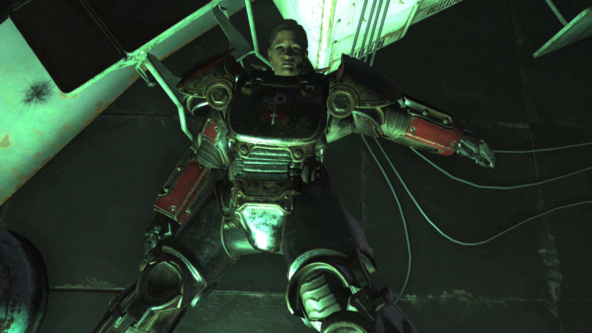
その後、シンはラフマーニに激怒し、このようなことこそがエルダーたちが防ぎたかったこと、つまり人々が科学で神を演じようとすることだと叱責します。ラフマーニはその点については彼に同意しますが、ブラックバーンの科学者たちと対峙した際、彼らは慈悲を乞い、大戦争とその後の衰退により学校や大学が失われたウェイストランドにおいて自分たちの研究がいかに貴重かを考慮し、命を助けてほしいと懇願します。ラフマーニは現在の人命の尊さゆえに彼らを助けたいと考えていますが、シンは彼らが生き続けることを許された場合、彼らの知識が誤った手に渡った際にどれほど危険であるかを直接見た後、彼らを殺害することを固く主張します。最終的に、ブラックバーンの仲間たちをめぐる対立により、ラフマーニとシンは同意に達することができず、袂を分かつことになります。一方が殺されるかマクソンの元に帰ることを許されるか、もう一方がブラザーフッドの指揮を執り、アパラチアへの新たな義務に導くことになります。
性格
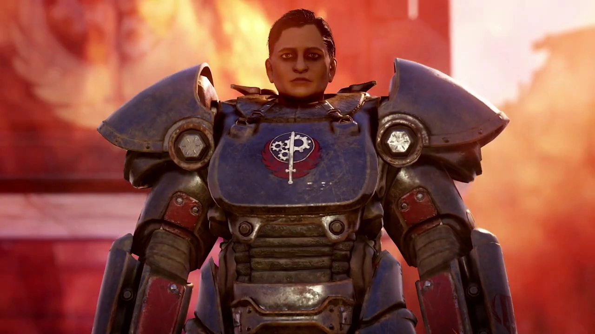
ラフマーニは攻撃的で大胆なことで知られており、デル・ローソンによれば、ラフマーニはかつて、グループの他のメンバーがパニックを処理する前に、グレイブを使ってヤオ・グアイの頭を突き刺したことがあります。
ラフマーニは利他的であり、ウェイストランドを助けたいと願っています。シンとは対照的に、ラフマーニは自分たちの支部を、平和維持により重点を置いた、独立した利他的なブラザーフッドに変革することを密かに望んでいます。例えば、彼女は単にテクノロジーを収集するのではなく、生活を向上させるためにその使い方を人々に教えたいと考えています。ラフマーニは、エルダー評議会の支配を人類を助けるという彼女の理想の妨げと見なしており、彼女の支部に一切関与しないことを望んでいます。ラフマーニは、過去に多くの無実の命が失われた事件のために、称号を剥奪され彼らの影響力が非合法とされることを恐れており、通信を確立することにためらいを示しています。通信を再確立すること自体が命令であったという事実にもかかわらず、ラフマーニは彼らのブラザーフッド部隊が公認の分派として存続し、「国中に権威と善意を」広めることができると信じています。
ラフマーニは凶悪なレイダーであっても、すべての人命の価値を尊重しています。しかし、シンは彼女の優しさが度を越えることがあると考えており、それは彼女が送信機を壊した時や、ブラックバーンの科学者たちを処刑から救おうとした時などに表れています。ラフマーニはまた、ジョアンナ・メイフィールドとアリエスが企んでいると非難した時に示されたように、うぬぼれが強く、人々の本質を誤解することがあることも示されていますが、後にアリエスには謝罪しています。
プレイヤーキャラクターとの相互作用
クエスト
- Field Testing: パラディン・ラフマーニは、Vault居住者に自分自身を証明する任務を与えます：マーティ・パトナムかコリン・パトナムをブラザーフッドに勧誘すること。
- Disarming Discovery: パラディン・ラフマーニは、イニシエイトとしての最初の任務として、「ザ・リトリート」の地元問題（ダガー率いるブラッドイーグルスのギャング）の支援を割り当てます。
- Property Rights: パラディン・ラフマーニは、クレーターから盗まれたミサイルランチャーを取り戻す任務を割り当てます。
- Supplying Demands: パラディン・ラフマーニは、ファウンデーションのグロリア・チャンスと接触し、貿易取引を交渉しながらミサイルを取り戻す任務を割り当てます。
- Over and Out: パラディン・ラフマーニとナイト・シンは、ロスト・ヒルズのメイン・ブラザーフッドとの通信を再確立する任務に赴きます。
- The Best Defense: パラディン・ラフマーニとブラザーフッドは、アトラス砦でスーパーミュータントに攻撃されます。ラフマーニは彼らに戦いを挑むつもりですが、シンはそれを自殺行為だとみなします。
- A Knight's Penance: パラディン・ラフマーニは、増大するスーパーミュータントの脅威について学びます。
- Out of the Blue: パラディン・ラフマーニは、Vault居住者および「アリエス」と共に行方不明者の失踪を調査し、ハーパーズ・フェリーのトンネル内で一時的なフォロワーとなります。
- The Catalyst: パラディン・ラフマーニは、混乱の背後にいるエンジニアと関わることになります。
その他の相互作用
- プレイヤーが彼女を「ボス」と呼ぼうとすると、彼女はそのニックネームを拒否し、Vault居住者にパラディン・ラフマーニと呼ぶように伝えます。
- Out of the Blueの最中にパワーアーマーを着てブルーリッジのオフィスに入ると、ラフマーニはVault居住者に対して、彼女が言ったように全く目立たないわけではないと叱責します。
- プレイヤーがシンに味方した場合、ラフマーニはシンとVault居住者によって戦闘で殺される可能性があります。彼女が攻撃されなかった場合、ラフマーニはシンと彼らのイニシエイトが本当に科学者を殺害することを容認し、彼らが救いようがないと考えていることにどれほど失望しているかを言及します。シンはラフマーニがブラザーフッドから追放されたと述べます。ラフマーニは結局ブラザーフッドを変えることができなかったことを嘆き、どこか他の場所で新しく始めなければならないと言います。ラフマーニは科学者たちの処刑を見たくないため、部屋を出ます。シンがエルダーたちと再会するためにカリフォルニアに帰るだろうと言及するラフマーニのシナリオとは異なり、シンのシナリオではラフマーニがどこに行くかは明らかにされていません。しかし、彼女はもはやゲームの世界では見つからなくなります。
開発の裏話
- レイラ（Leila）はアラビア語とペルシャ語で「夜」や「暗い」を意味する名前であり、夜に生まれた女の子にしばしば名付けられます。ラフマーニ（Rahmani）はアラビア語で「慈悲深き者の子孫」を意味します。
- 『Steel Reign』のクエスト「Out of the Blue」で、ラフマーニはナイト・コナーズへの乾杯の際に「Be salâmati!」（به سلامتی）と言います。これはペルシャ語で「健康のために」を意味する表現で、英語の「Cheers!（乾杯！）」に相当します。
- Bethesdaは、大多数のプレイヤーがシンよりもラフマーニに味方していることを明らかにしており、プレイヤーの82%がラフマーニを、18%がシンを選んだという結果を示しました。
ギャラリー
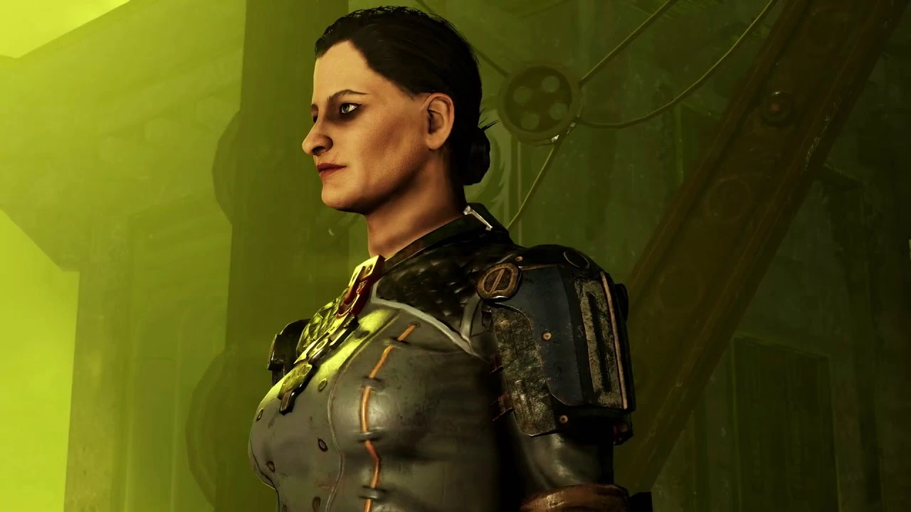
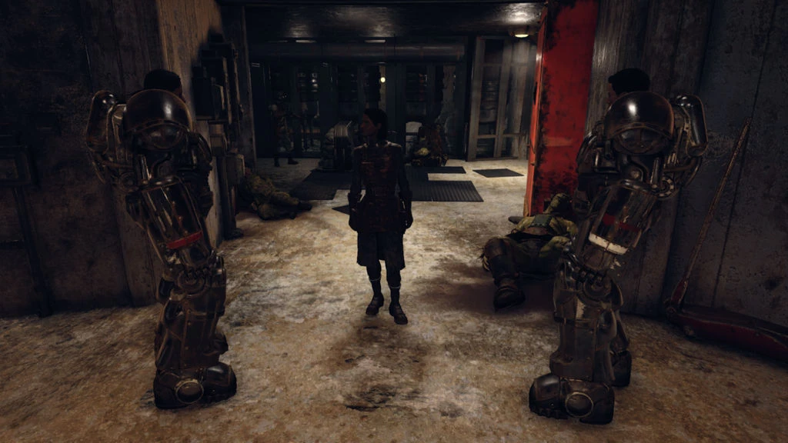
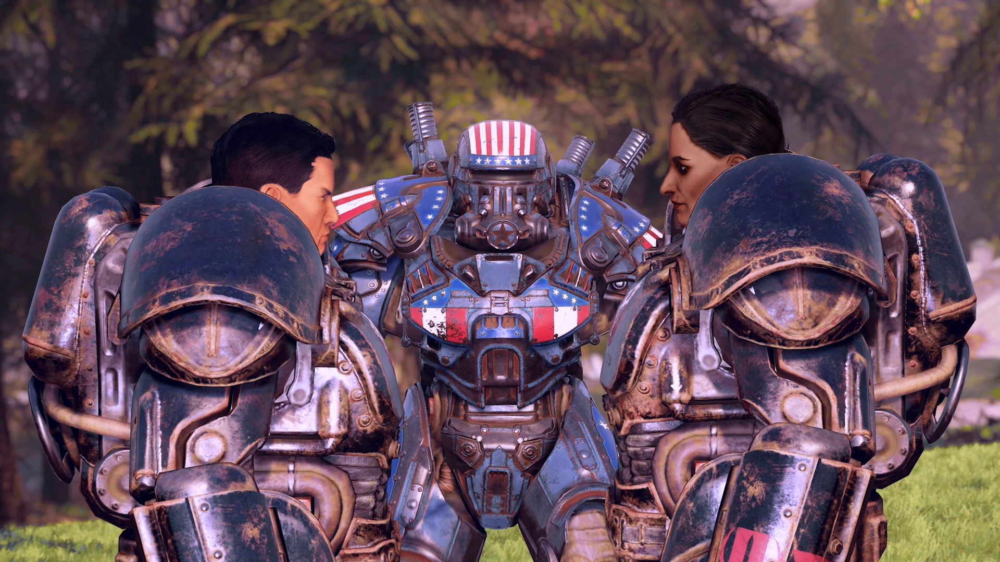
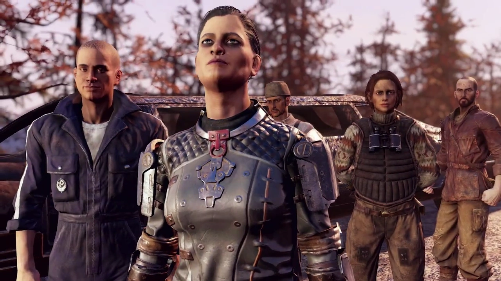
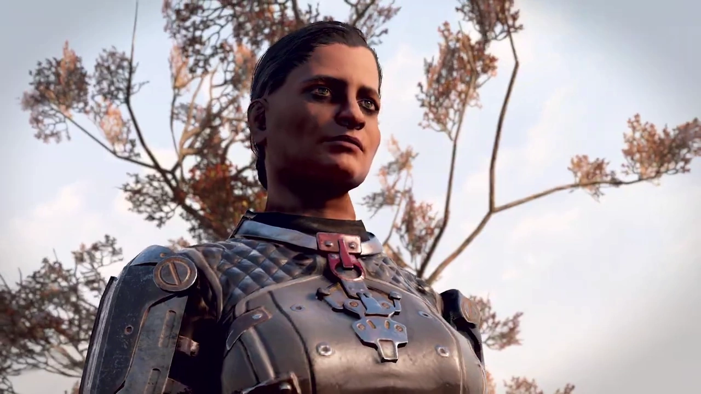
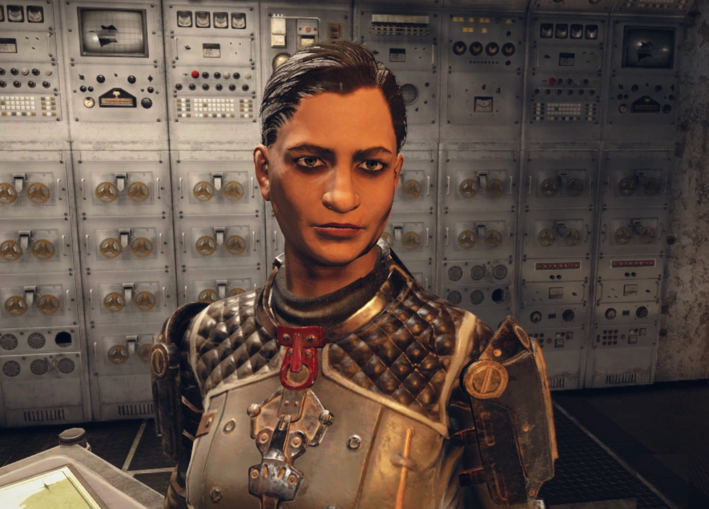
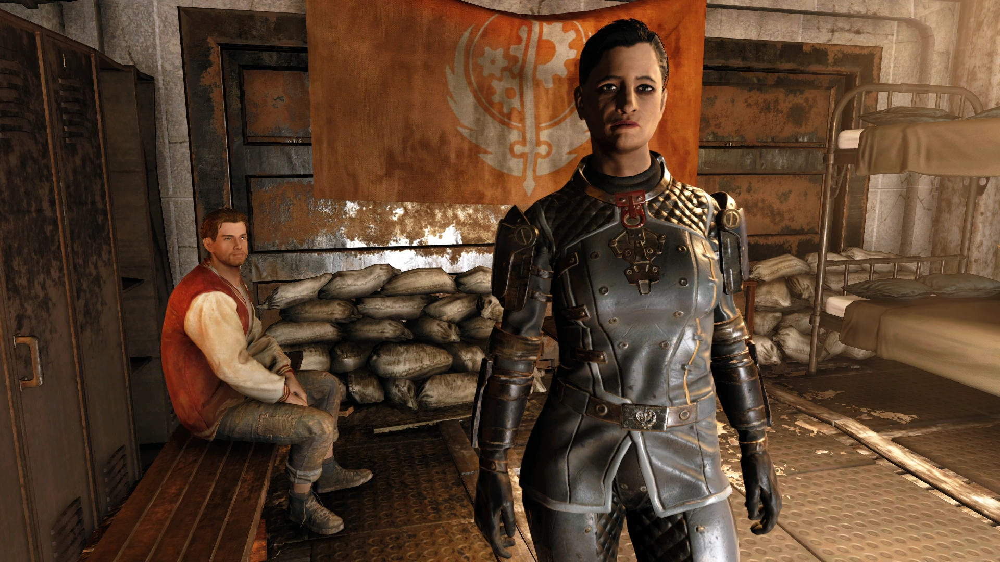
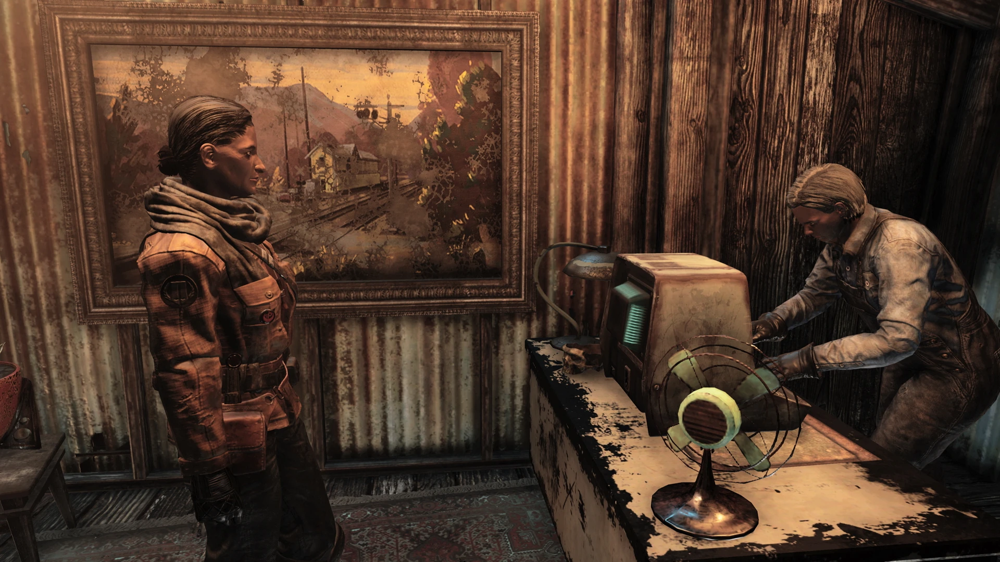
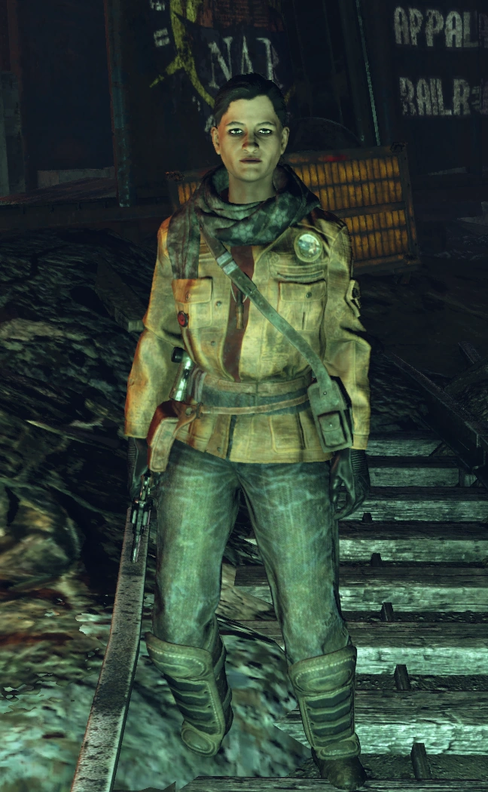
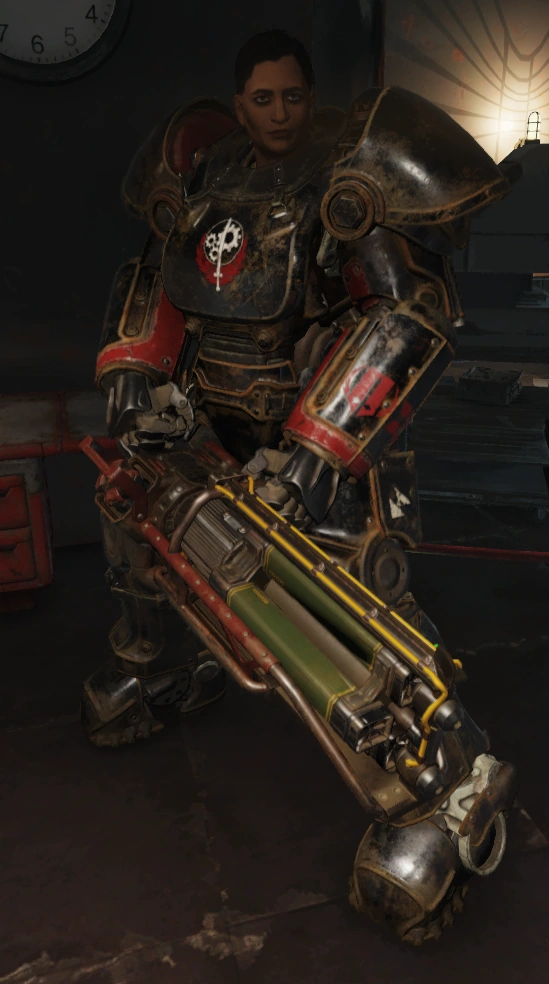
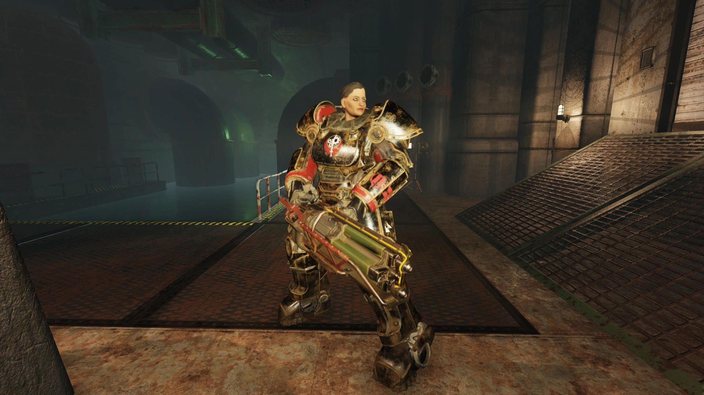
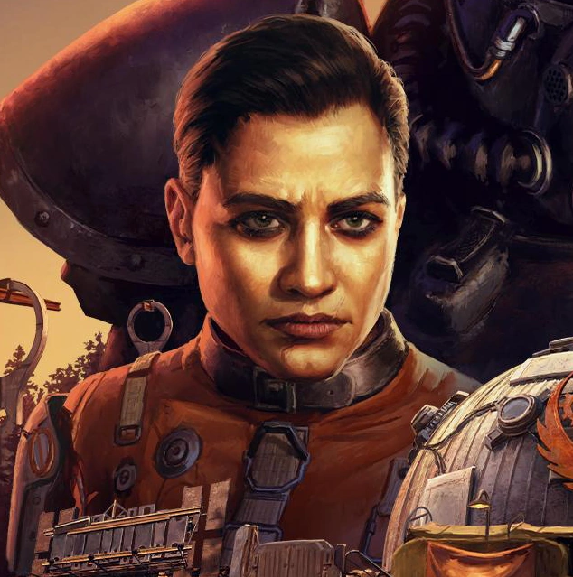
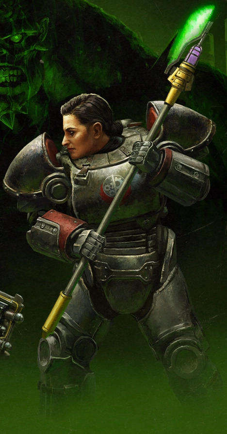
パラディン・ラフマーニは、Fallout 76におけるブラザーフッドの物語の中心人物であり、彼女の理想と現実との衝突がアパラチアの運命を大きく左右します。
彼女が過去の悲劇から学び、冷酷なプロトコルよりも目の前の人命を救うことを選ぶ姿勢には、多くのプレイヤーが共感したのではないでしょうか。実際、統計でも大多数が彼女に味方しています。
シンとの決別シーンでの通信機破壊は、彼女の不退転の決意を示す強烈なモーメントでした。
しかし、彼女の「優しさ」が時に独善的になり、科学者たちを赦そうとした判断にはプレイヤーとしても大いに考えさせられます。彼女の理想は輝かしいですが、ウェイストランドではその優しさが弱点にもなり得るという、非常にFalloutらしいジレンマを体現している素晴らしいキャラクターです。
彼女との出会いを通じて、ブラザーフッド・オブ・スティールが単なる技術の番人ではなく、人間味あふれる組織として再構築されていく過程を見届けられたことは、本作の大きな魅力の一つですね。
This article was created by translating and editing Leila Rahmani from Nukapedia: The Fallout Wiki.
Licensed under the Creative Commons Attribution-Share Alike License (CC BY-SA 3.0).
コミュニティ維持のため、寄付を受け付けております。
> COMMENTS